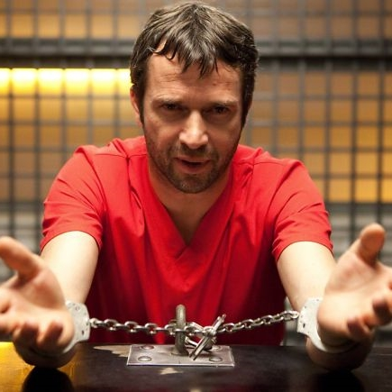

S É R I E S - M A N I A
|  | GÊNERO | Drama Policial |
|---|---|---|
| STATUS | Renovada | |
| ESTRÉIA | EUA 21/01/2013 | |
The Following é uma série de televisão dramática norte-americana, criada por Kevin Williamson. Protagonizada por Kevin Bacon, estreou em 21 de janeiro de 2013 na Fox, também contando com James Purefoy, Shawn Ashmore e Natalie Zea no elenco. A série parte da premissa de um agente do FBI, Ryan Hardy, que investiga um criminoso que usa a tecnologia para criar uma rede de serial killers com base nos ensinamentos deixados pelo poeta e escritor Edgar Allan Poe. Começou a ser exibida no Brasil a partir de 21 de fevereiro de 2013, pelo canal por assinatura Warner.